Keep the code visible
The real IDE windows, using synthetic Java files. Other tool windows are closed. Click an image to inspect it at its original size.
A right dock avoids covering code, but it still consumes width. The small split view makes that trade-off visible. The final pair shows the same window after hiding Vim Keys; a subsequent state update keeps it hidden.
Single editor · 1440 × 1000

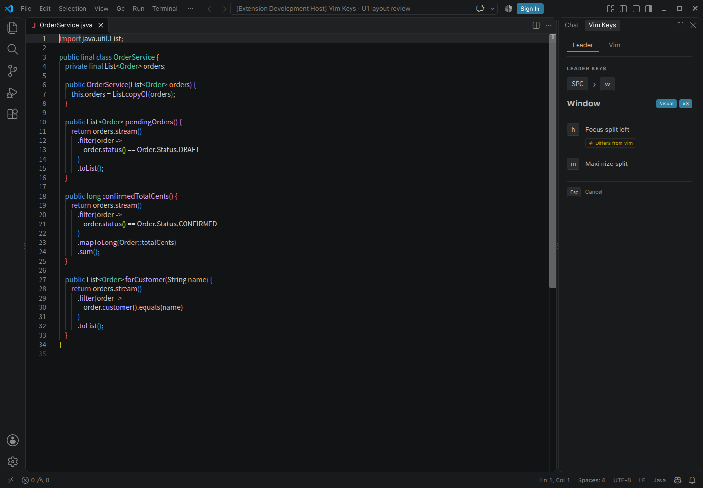

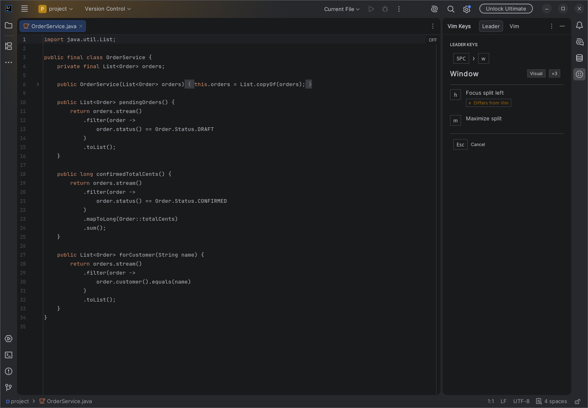
Split editors · 1440 × 1000

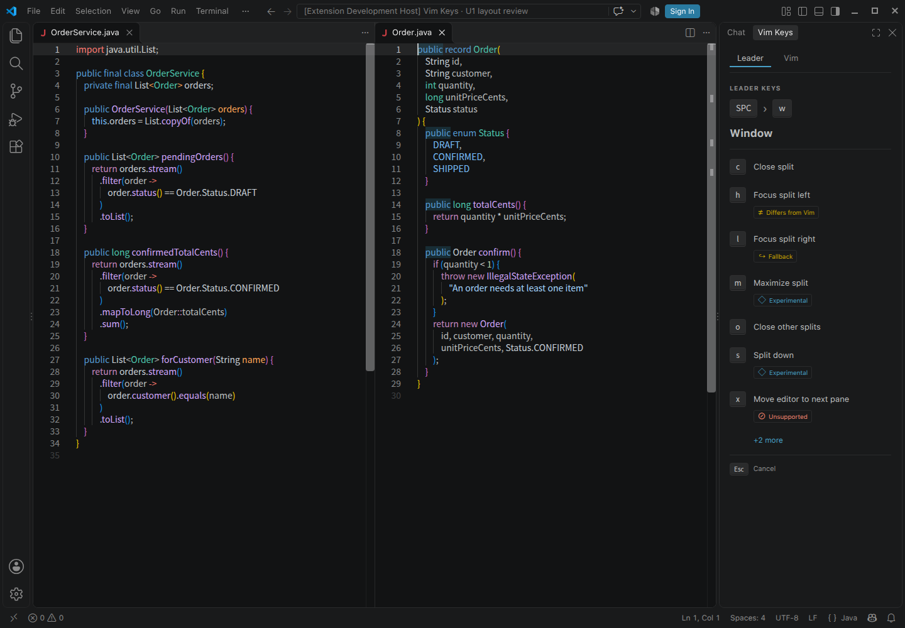

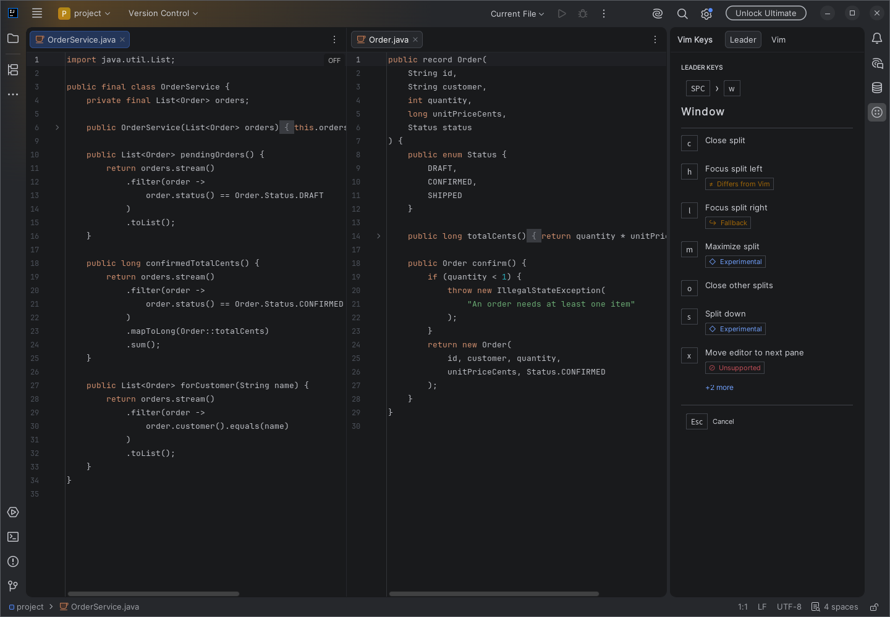
Small split · 1100 × 800

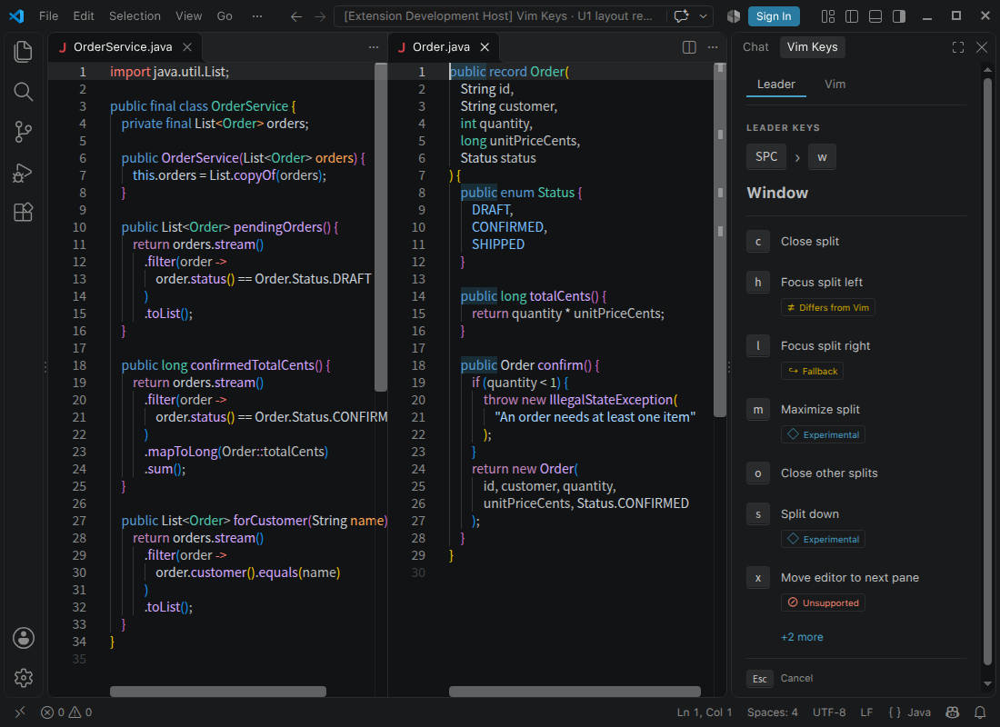

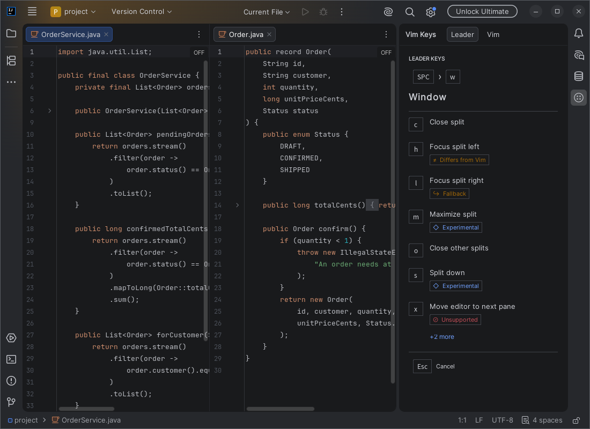
Small split, view hidden · 1100 × 800

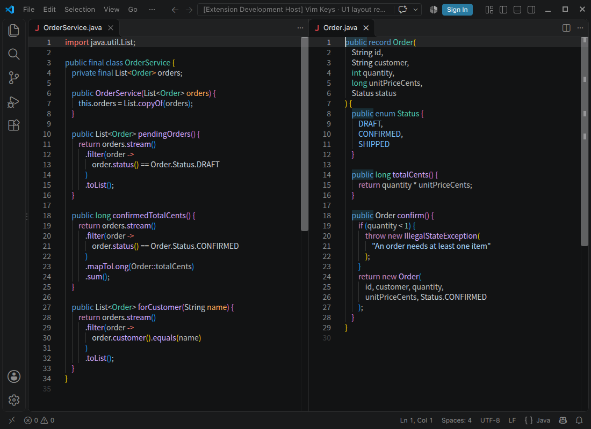

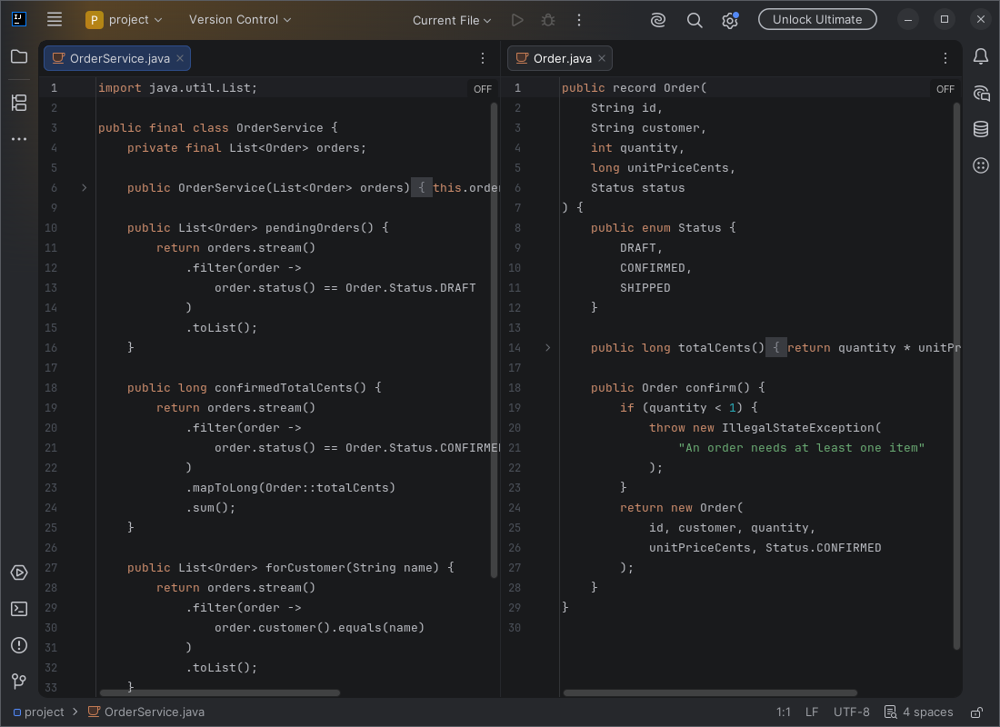
A clear place to begin
The root list, group chevrons and a quiet setup notice.


Keep the next key in view
A keycap trail, the Window group, and separate Visual and count indicators.


Explain exceptions in words
Four icon-and-text badges, a 24-character label and a shared overflow example.


Teach a reusable pattern
A static operator-and-motion card. This design does not require live input observation.


Reference browsing
Start with Movement; browse all five topics without entering a leader sequence. Simulated preview; no engine observer.
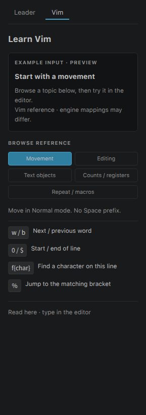

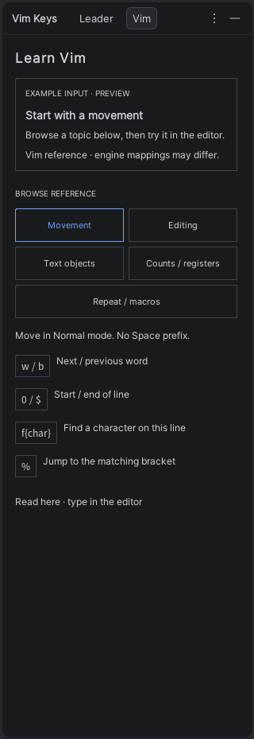
Pending d
Choose a motion or text object to finish the delete operator. Simulated preview; no engine observer.
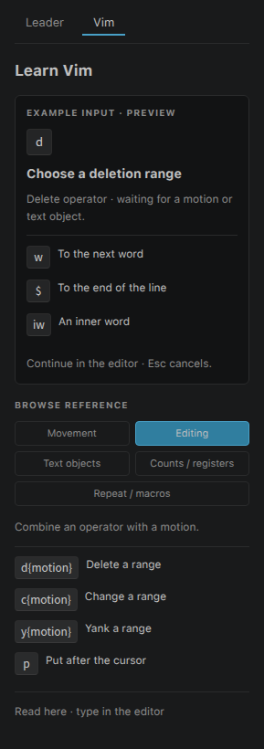

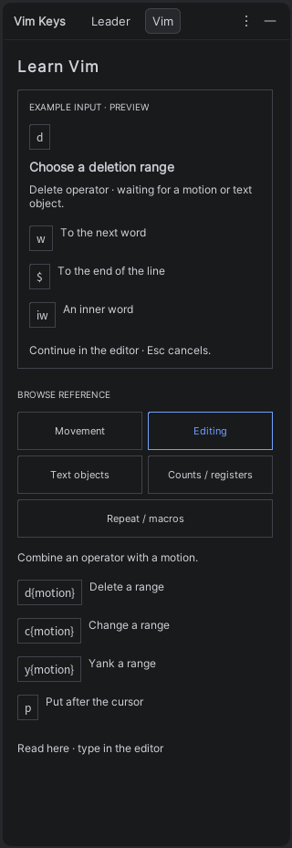
Pending di
Choose the inner object; w, ", and ( are continuations, not complete commands. Simulated preview; no engine observer.
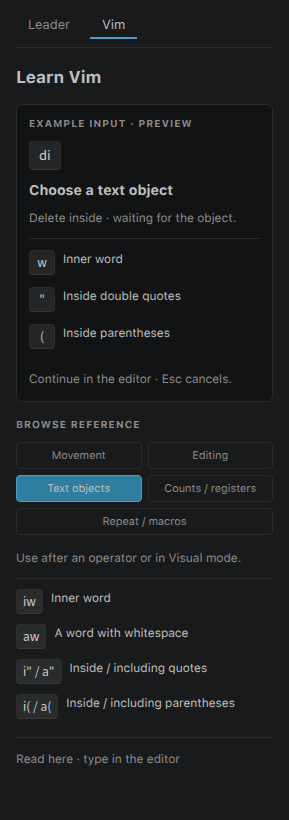

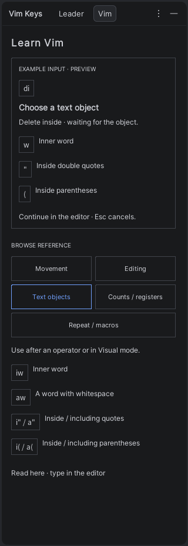
Pending f
Wait for an arbitrary target character on the current line, rather than listing a command menu. Simulated preview; no engine observer.
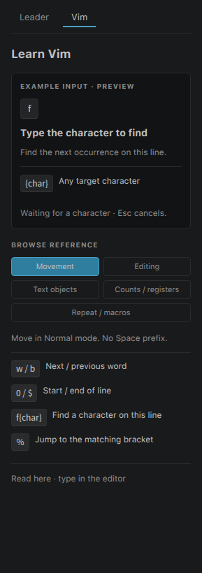

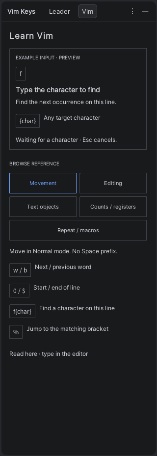
Pending "a3d
Keep register a, count 3, and the delete operator visible while waiting for the range. Simulated preview; no engine observer.
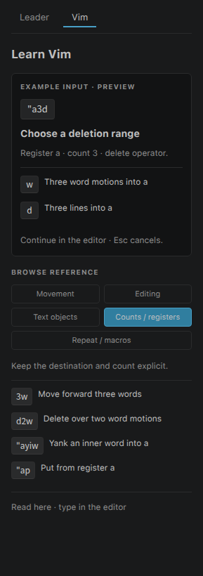

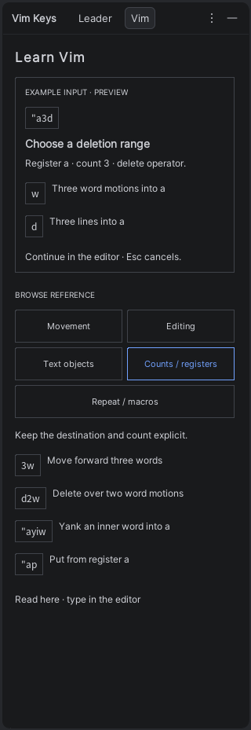